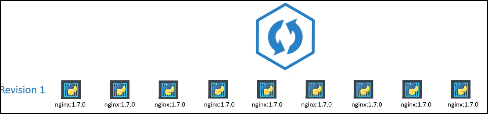

Deplyment - Update and Rollback
Prima di tutto, cerchiamo di capire cosa sono il Versioning e Rollout.
Quando per la prima volta crei un deployment, triggera un Rollout.
Un nuovo Rollout crea una nuova Deploy revision.

Nel futuro, quando l'applicazione viene upgradata, ovvero quando
la versione del container viene upgradata ad una nuova versione,
un nuovo Rollout è triggered ed una nuova Deployment Revision
è creata, chiamata "Revision 2"

Questo ci permette di tener traccia dei nostri cambiamenti fatti al nostro Deployment,
e permette di fare Rollback a precedenti versioni del deployment se necessario.
Puoi vedere lo stato del tuo Rollout, tramite il comando "kubectl rollout status [deploymentname]".
Per vedere le revision e la history del Rollout, possiamo usare "kubectl rollout history [deploymentname]"

Strategie di Deployment
Esistono 2 tipi di strategie di Deployment.
Esempio: hai 5 replica della tua WebApp, deployate.
Un modo per upgradare il tutto sarebbe:- Prima, distruggere tutte le instanze
- Solo successivamente, creare tutte le instanze nuove.
In questo modo però sta tra la cancellazione e creazione delle instanze:
l'applicazione va down e non è accessibile agli utenti!
Questa strategia si chiama "Recreate Strategy" e per fortuna non è quella di default.

Un'altra strategia è quella di rimuovere un instanza e di creare immediatamente
la sua versione upgradata: in questo modo l'applicazione non va down
e l'upgrade sembra non visibile al mondo esterno.
Questa si chiama "Rolling Update"

Se non specifichi nulla, di base ti rende come "Rolling Update".
In altre parole: Rolling Update è la Deploy Strategy di default.
Adesso, come facciamo upgrade sul nostro Deployment?
Per effettuare delle modifiche, ci basta modificare il YAML file del Deployment:


Ma esiste anche un altro modo per fare la stessa cosa.
Possiamo usare il comando "set image" per updatare l'immagine della nostra applicazione.
NB: Il file YAML non verrà toccato, quindi stati attento se riusi il YAML file!

Possiamo notare le differenze tra Recreate e RollingUpdate qui:

Cerchiamo di capire come funziona il Deployment e come upgrada.
Quando un nuovo Deployment è creato (ad esempio: per creare 5 replicas):
- Crea un ReplicaSets in modo automatico
- Il ReplicaSets crea i 5 PODs
Quando deve upgradare, semplicemente crea un nuovo ReplicaSet
e inizia a deployare i POD lì, cancellando i PODs.
Infatti, col comando "kubectl get replicasets" possiamo vedere
il nuovo ReplicaSet con 5 PODs e il vecchio con 0 PODs.

Ora, supponiamo che qualcosa non vada nel nuovo upgrade e che vogliamo
tornare ad una versione precedente, ovvero fare Rollback.
Per fare Rollback, basta il comando "kubectl rollout undo [deploymentname]"

Semplicemente: distrugge i POD nel nuovo ReplicaSet
e li ricrea nel vecchio ReplicaSet!